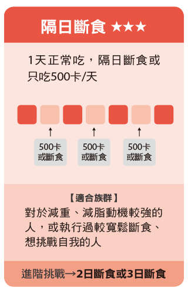
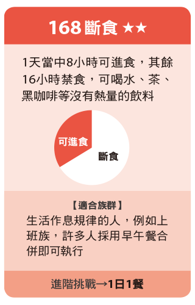
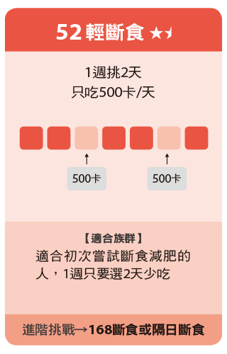

拉長空腹時間，藉由飲食時間的調整，自然而然減少熱量攝取，身體也有較多時間修復、消化。 斷食「時間」要足夠，才能進入「燃脂」！在這段期間內，葡萄糖和肝醣皆被身體消耗完畢後，才會啟動燃燒脂肪作為身體能量來源。  
在濃縮的4~8小時中間，並不表示可以隨意進食，建議選擇低醣飲食，減少澱粉攝取，甚至搭配生酮，將身體調整為將脂肪作為熱量來源，效果更佳。可食用 : 大骨湯、氣泡水、堅果、寒天 補水量 : 斷食期間代謝變快，水分也消耗得快，建議補水量提高至「體重Ｘ30-40」；避免血鈉多低，也建議攝取未精製鹽分如玫瑰鹽等。
孕婦 發育中青少年 幼兒 糖尿病患者